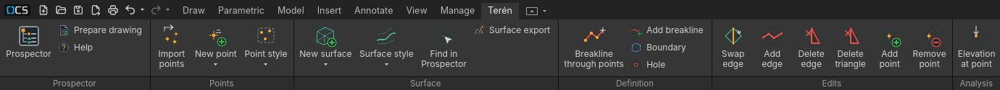
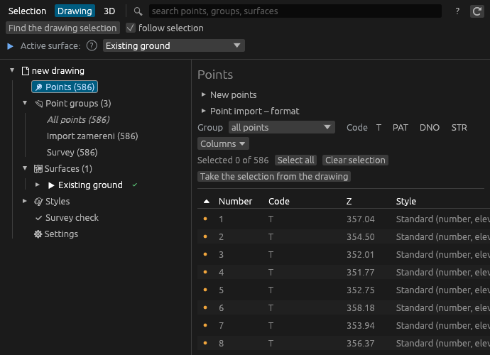
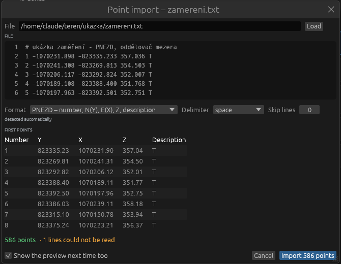
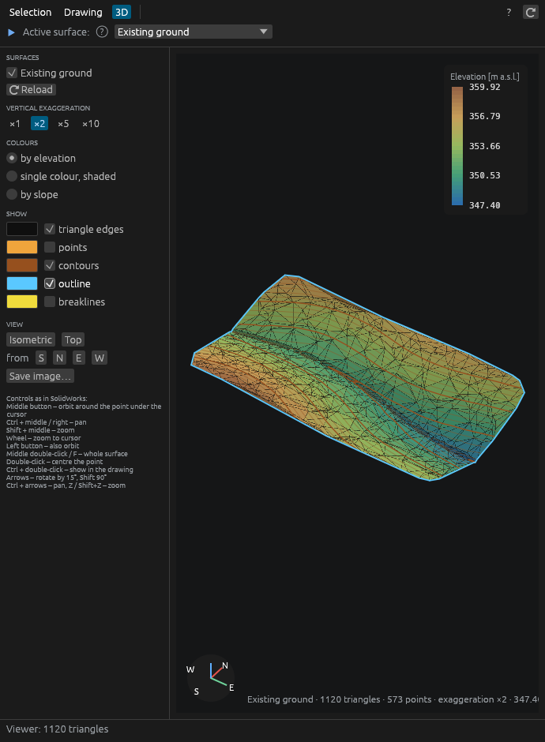

Terén
Open CAD Studio plugin: survey points, TIN surfaces, breaklines, contours
Short manual · version __VERZE__

Open CAD Studio plugin: survey points, TIN surfaces, breaklines, contours
Short manual · version __VERZE__
Terén builds a digital terrain model from survey points directly in an Open CAD Studio drawing:
Everything is stored in the drawing (DWG/DXF) – the drawing can be passed on and edited without the plugin; the plugin then reads the surface again.
Plugin Manager: in Open CAD Studio open the Plugin Manager, find Terén and click Install. After a restart the Terén tab appears.
Manually (Windows): download Teren-windows.zip from the GitHub release, extract it and run nainstalovat.bat. The plugin is copied to %APPDATA%\OpenCADStudio\plugins\cz.fluvio.teren.
Each Terén release is built for one Open CAD Studio release – the Plugin Manager offers the right one; for a manual install pick the release from the table in the README (Terén 1.0.2 and 1.0.3 = Open CAD Studio 2026.45). The interface language (Czech / English) is set in Prospector › Settings.

The Terén ribbon tab
| Group | Contents |
|---|---|
| Prospector | Prospector window, Prepare drawing (layers, markers, template), Help |
| Points | Import points, New point (manual, on surface), Point style for selected points |
| Surface | New surface (existing ground, design from 3D lines, from clicked points, wizard), Surface style, Find in Prospector, Surface export |
| Definition | Breakline through points, Add breakline, Boundary, Hole |
| Edits | Swap / add / delete edge, delete triangle, add / remove point |
| Analysis | Elevation at point |
The Prospector is a separate window with three modes:

Prospector – Drawing mode, point table
Help with workflows and a glossary is in the Prospector (F1); the ? next to a term shows an explanation.

Import preview

Surface with contours
A surface with automatic recalculation recalculates itself when points, breaklines or boundaries change. Otherwise the Prospector marks it ⚠ out of date and you just click Recalculate. Each Terén action (import, recalculation, redraw) is undone in one Undo step (Ctrl+Z).
A style sets the marker (cross, circle, tree, manhole…) and the label (number, elevation, code). A manually set style applies, otherwise the style by code (the for codes field, e.g. STR → tree), otherwise the group's style, otherwise Standard. Sizes are in mm on paper and follow the drawing scale (annotation scale in the status bar, or Settings › Scale).
Custom marker: in the style editor choose custom – drawing block and select a block. The block's base point = point position, the block is scaled to the marker size; set the colour inside the block to ByBlock.
A point, its marker and labels stay together – clicking any part selects the whole point. Moving a point: grab the marker or a label and move it (with a grip or the Move command) – the whole point moves, its elevation stays and the surface is recalculated. With moving a point label moves only the label turned on in Settings, a moved label stays aside (with a leader line) and the point stays put; Reset labels in the point table brings it back. A copied marker or label is deleted. Overlapping labels are moved aside with a leader line (can be turned off in Settings).
New point › Manual point: click in the drawing or enter x,y; a window asks for the elevation (suggested from the surface or the previous point) and the code. Point on surface takes the elevation of the active surface. Change the elevation, number and code of an existing point directly in the point table: double-click a cell, type, Enter saves and moves to the next point (Esc cancels). For several selected points at once, set or add an elevation and set a code in the row above the table.
A group selects points by rules (code, numbers, import file), with exclusions and manually added / removed points. The preview shows in colour which points belong. A surface is built from groups – a change of a group recalculates the surface or marks it out of date.
Prospector › Survey check finds points whose elevation differs markedly from their surroundings (typo, point on a car). Suspicious points are circled on the TER_KONTROLA layer; one click leaves them out of the surface.
A surface is built from point groups, drawing objects (points, blocks, lines, 3D faces – e.g. a surveyor's drawing), breaklines, boundaries and holes, and manual edits. All are listed in the Prospector at the surface › What the surface is built from; each item can be disabled, shown or removed.
The active surface (top row of the Prospector, double-click in the tree) is used by the Edits tools, Elevation at point and Point on surface.
The surface style sets what is drawn: triangles, contours (minor / major, colours, labels), outline, slope arrows. Edit styles in the Prospector under Styles; a built-in style can always be restored to its original settings.
In the drawing a surface is a block on its own layers; Settings › Surface cannot be selected by clicking lets clicks pass through to the points below.

Colours by elevation, slope or a single colour, vertical exaggeration ×1 to ×10, contours, outline, breaklines, points and triangle edges – pick the colour of each element with the swatch next to it. Controls as in SolidWorks: the middle button orbits around the point under the cursor, Ctrl + middle pans, the wheel zooms, F shows the whole surface. Save image writes a PNG to the drawing folder.
Prospector › Settings: language (Czech / English, takes effect after Open CAD Studio is restarted), scale, label offset, import preview, excluded codes for a new surface, breakline snap, survey check threshold.
Drawing template: Save this drawing as the template stores the styles and scale in the user profile; Prepare drawing (ribbon) then sets up layers, point markers, scale and styles in a new drawing with one click.
| Problem | Solution |
|---|---|
| No points appeared after import | Check the format and column order in the preview (S-JTSK: positive Y and X in the PYXZD format). |
| Long triangles across the edge of the surface | Set the Max. edge length or add a boundary. |
| Triangles cross a slope edge | Add a breakline (Breakline through points). |
| Trees are in the ground | Code STR is in the surface's Exclude codes; add other codes that do not belong to the ground. |
| The surface shows ⚠ out of date | Click Recalculate, or turn on automatic recalculation. |
| Labels are too large / small | Change the scale (status bar or Settings) – labels are redrawn. |
Terén · Ing. Pavel Janouš · GPL-3.0 licence · source code and issue reports: GitHub